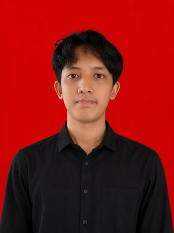

— Dokumen 01 / Profil
Halo, saya Radith Ruliyan.
Saya merancang & membangun
|
Saya adalah mahasiswa Sistem Informasi di Universitas Gunadarma yang memiliki ketertarikan pada pengembangan web, UI/UX, dan teknologi jaringan. Saya senang membangun website yang cepat, mudah digunakan, dan terus belajar melalui setiap proyek yang saya kerjakan.
Gulir— Dokumen 02 / Tentang
Tentang Saya

Saya adalah mahasiswa Sistem Informasi yang memiliki ketertarikan pada pengembangan web, UI/UX, dan teknologi jaringan. Saya senang membangun website yang cepat, mudah digunakan, dan terus mengembangkan kemampuan melalui setiap proyek yang saya kerjakan.
Saat ini saya fokus mempelajari pengembangan front-end modern menggunakan HTML, CSS, dan JavaScript, serta memperluas pengetahuan di bidang back-end dan desain antarmuka. Bagi saya, teknologi bukan hanya tentang menulis kode, tetapi juga menciptakan pengalaman yang bermanfaat bagi pengguna.
HTML & CSS
JavaScript
UI/UX Design
React
Node.js
Figma
Git
Unduh CV
— Dokumen 03 / Karya
Portfolio
Pilihan proyek yang merepresentasikan cara saya bekerja. Ganti dengan studi kasus Anda sendiri.
— Dokumen 04 / Riwayat
Pendidikan
2026 — 2030
S1 Sistem Informasi
Universitas Gunadarma, Karawaci
Sedang menempuh pendidikan S1 Sistem Informasi. Mempelajari pengembangan perangkat lunak, basis data, analisis sistem, dan desain antarmuka pengguna.
2024 — 2026
SMK PGRI 1 Kota Tangerang
Jurusan TJKT (Teknik Jaringan Komputer dan Telekomunikasi), Kota Tangerang
Aktif di Organisasi Pecinta Alam RJWS.
2021-2024
MTsN 1 Kota Tangerang
Madrasah Tsanawiyah Negeri 1 Kota Tangerang
Menempuh pendidikan menengah pertama dengan fokus pada mata pelajaran umum dan agama.@
— Dokumen 05 / Riwayat
Pengalaman
Oktober 2025 – Maret 2026
Front-End Developer
IT Support & Helpdesk - Universitas Multimedia Nusantara
• Memberikan dukungan teknis kepada pengguna terkait perangkat keras dan perangkat lunak. • Melakukan instalasi, konfigurasi, dan troubleshooting komputer serta jaringan. • Membantu pemeliharaan sistem agar tetap berjalan dengan baik. • Berkolaborasi dengan tim dalam menyelesaikan permasalahan teknis harian.
2022 — 2023
Magang UI/UX Designer
Nama Perusahaan · Kota Contoh
Merancang wireframe dan prototipe untuk fitur baru, melakukan riset pengguna sederhana, dan membantu proses handoff ke tim pengembang.
2021 — 2022
Freelance Web Developer
Klien Lepas
Membangun situs web untuk UMKM dan individu, mulai dari perancangan hingga deployment.
— Dokumen 06 / Tulisan
Blog
Catatan singkat seputar proses kerja, teknologi, dan hal yang sedang dipelajari.
12 Jan 2026
Judul Artikel Pertama Anda
Ringkasan singkat isi artikel yang menarik perhatian pembaca untuk membaca lebih lanjut.
Baca selengkapnya 03 Feb 2026
Judul Artikel Kedua Anda
Ringkasan singkat isi artikel yang menarik perhatian pembaca untuk membaca lebih lanjut.
Baca selengkapnya 20 Mar 2026
Judul Artikel Ketiga Anda
Ringkasan singkat isi artikel yang menarik perhatian pembaca untuk membaca lebih lanjut.
Baca selengkapnya— Dokumen 07 / Hubungi
Kontak
Punya proyek atau sekadar ingin menyapa? Silakan isi form di bawah atau hubungi langsung.
Emailruliyanradith@gmail.com
Telepon+62 851-2442-3972
LokasiKp. Kalipaten, Kel. Pakulonan Barat 2, Kec. Kelapa Dua, Kab. Tangerang, Banten